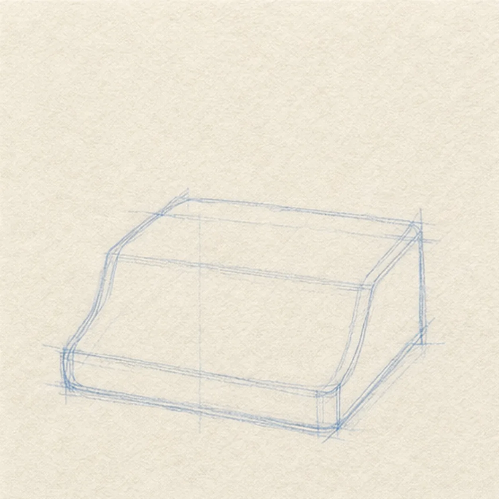
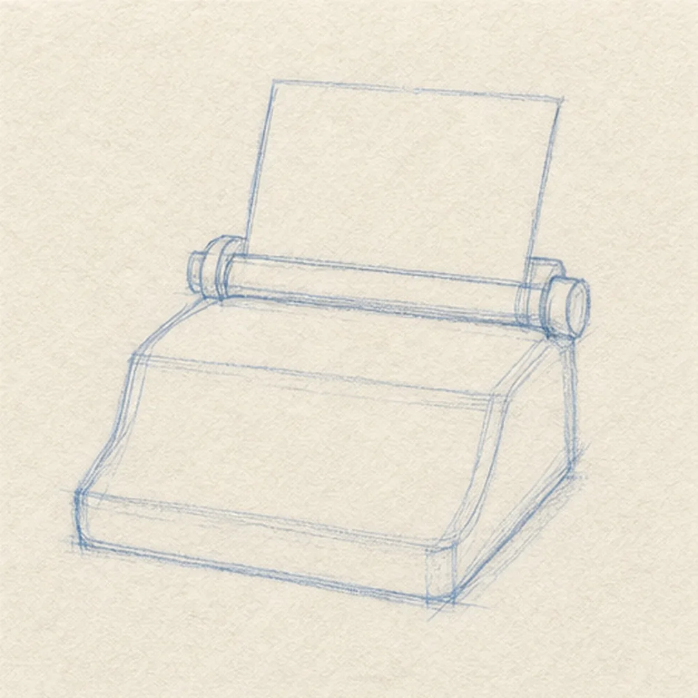
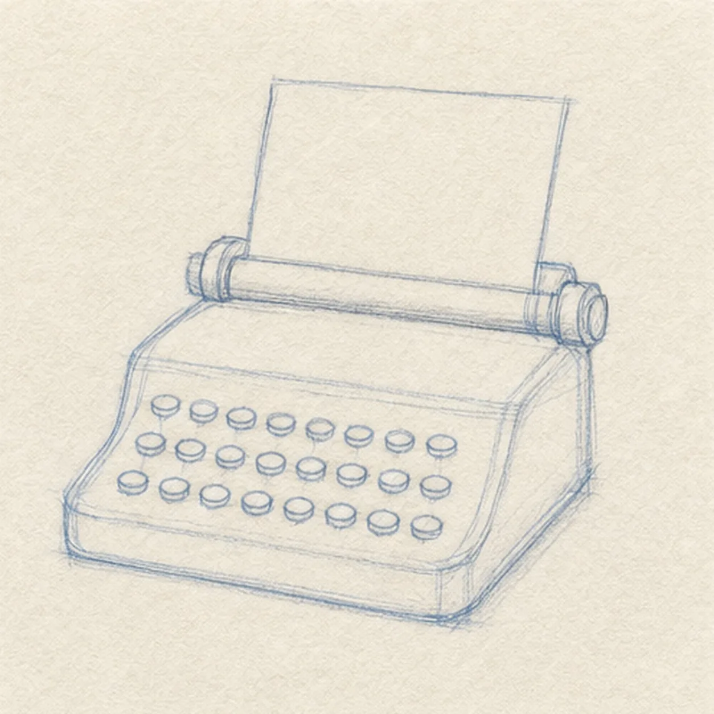
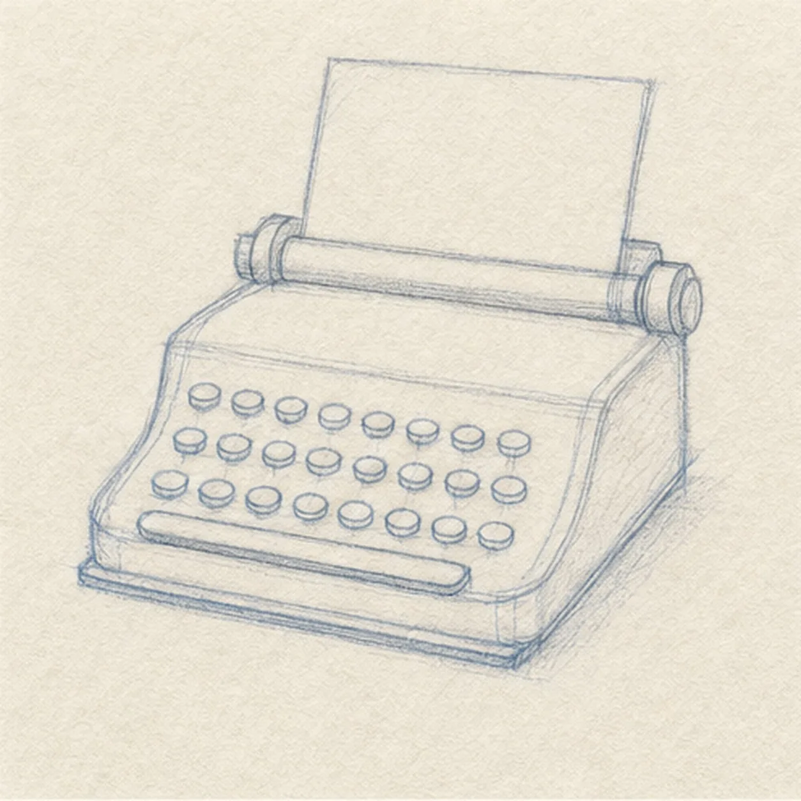
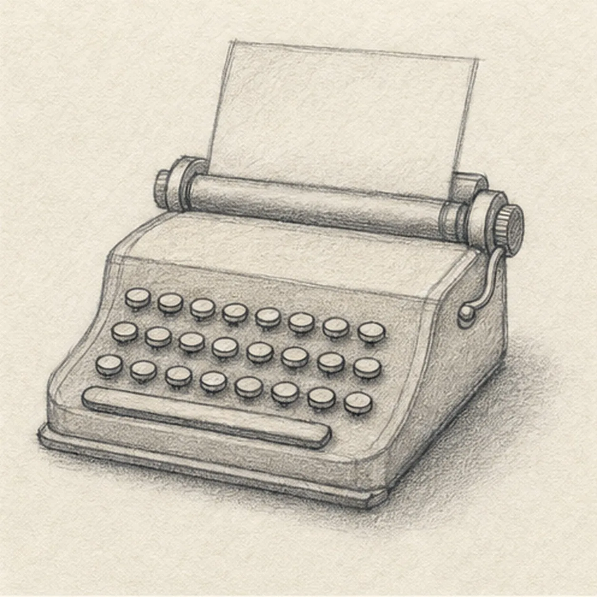

From the archive
Let's draw a vintage typewriter
Treat this as one small practice round: build the subject lightly, notice the shapes, then darken only the lines that help the finished sketch.
-
01

Block the machine
Draw a low baseline and a light compact typewriter body with a rounded front and a shallow lower base.
Sketch tip: Keep the body guide light enough to adjust. Check that both side walls lean by a similar amount before darkening either edge.
-
02

Set the paper and roller
Add a narrow roller bar along the back edge and slide one slightly tilted paper sheet behind the established body.
Sketch tip: Let the paper lean with the same perspective as the roller. Matching those angles keeps the sheet from looking pasted on.
-
03

Lay in the key bank
Place three staggered rows of small round key marks across the existing front plane.
Sketch tip: Suggest a tidy rhythm instead of measuring every circle. The rows read best when their gaps stay open and roughly even.
-
04

Shape the front controls
Draw a long space bar and narrow lower front lip beneath the existing keys.
Sketch tip: Ghost the space bar once before drawing it. One relaxed horizontal pull looks more convincing than several short repairs.
-
05

Finish the side hardware
Add a short bent carriage lever and side knob, then lay in a soft base shadow and quiet warm-gray tone on existing body planes.
Sketch tip: Shade along the machine planes instead of rubbing in circles. Directional tone helps the boxy shape stay solid.
-
06

Focus the typewriter finish
Darken the keeper contours and clarify the existing keys, paper edge, roller, lever, knob, warm-gray tone, and soft shadow.
Sketch tip: Stop before adding a desk, hands, lettering, or coffee cup. The paper, roller, key rows, and lever already make the machine recognizable.